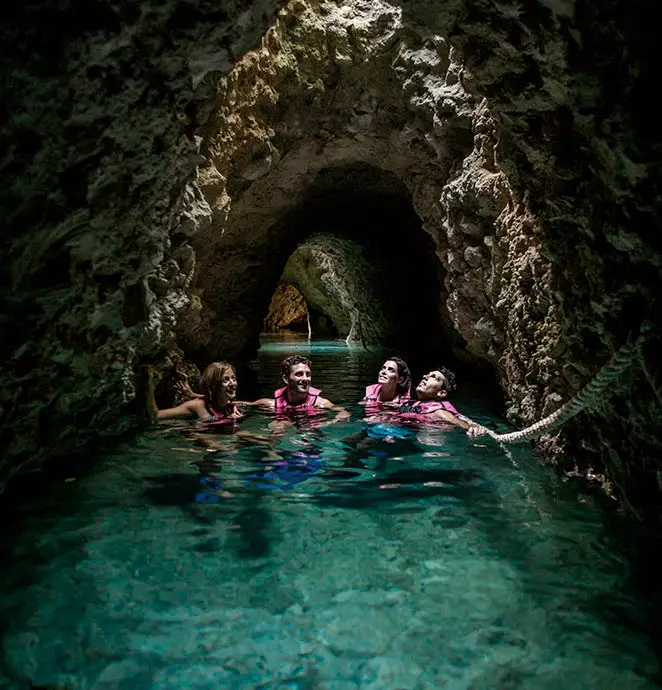
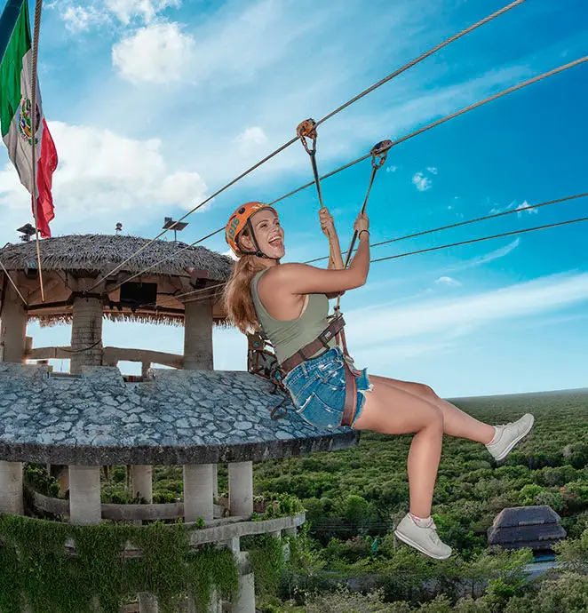
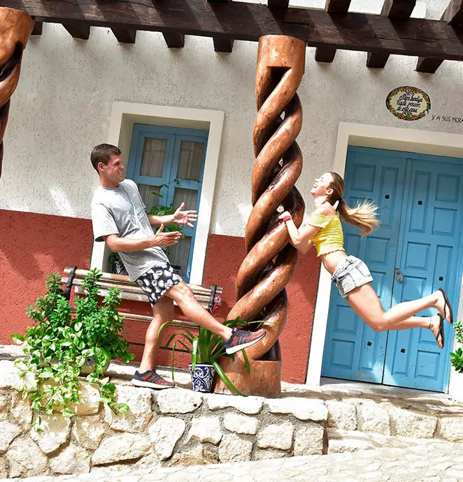
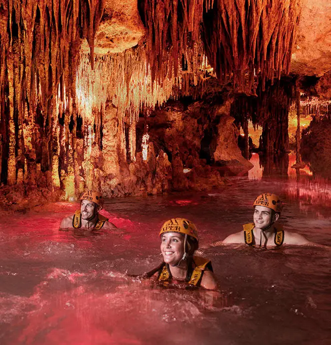
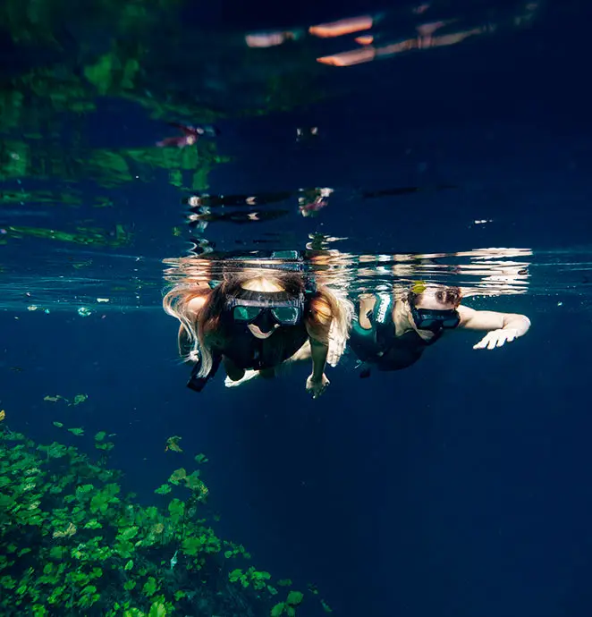
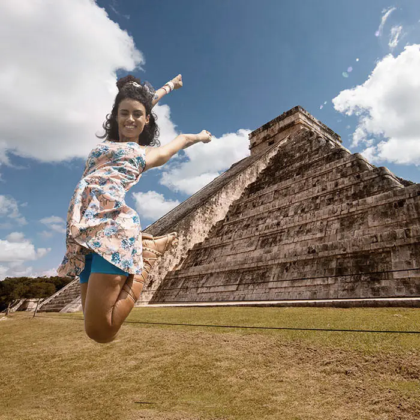

Hotel Caribeño
Un lugar inolvidable
TURISMO EN EL CARIBE
| All fun inclusive Tours and parks |
 XCARET
Disfruta lo mejor de nuestro país en el Majestuoso Paraíso de México con más de 50 atractivos naturales y culturales para toda la familia.
Lunes a sábado de 8:30 a.m. a 10:30 p.m
XEL-HÁ
Una maravilla natural de la Riviera Maya donde se puede gozar de un río que desemboca en una enorme caleta, además de tener snorkel, alimentos y bebidas ilimitados. Martes a sábado 8:30 a.m. a 6 p.m
 XPLOR
Deslízate por las tirolesas de la Riviera Maya, nada o rema por ríos bajo la superficie, maneja un vehículo anfibio y ten una expedición subterránea sin igual. Lunes a sábado 9:00 a.m.-5:00 p.m.
XOXIMILCO
Pasea en una trajinera por los canales mientras bailas al ritmo de música en vivo, haces nuevos amigos y disfrutas una cena típica y la barra libre. Martes a sábado de 7:15 p.m. a 12:00 a.m.
 XENSES
Diviértete en más de 50 escenarios fantásticos que pondrán a prueba tus sentidos, desde volar como un pájaro hasta una travesía por diversos ecosistemas. Lunes a sábado 8:30 a.m. a 7:00 p.m.
 XPLOR FUEGO
Al caer la noche, se encienden las antorchas de Xplor Fuego para una aventura entre la selva, volando arriba de las copas de los árboles y descender a cavernas y ríos subterráneos. (Próximamente)
 XENOTES
Descubre cuatro hermosos cenotes y realiza distintas actividades como rappel asistido, tirolesa o kayak. Lunes, martes, miércoles y viernes; transportación entre 8:00 a.m. y 10:00 a.m.
 XICHÉN DELUXE
Sigue los pasos de los antiguos mayas en un completo tour por la mítica Chichén Itzá. Incluye una parada en el cenote Zací y comida buffet en La Casona de Valladolid. (Próximamente)
¿Tienes preguntas o sugerencias? Envíanos un correo, sólo da click aquí.